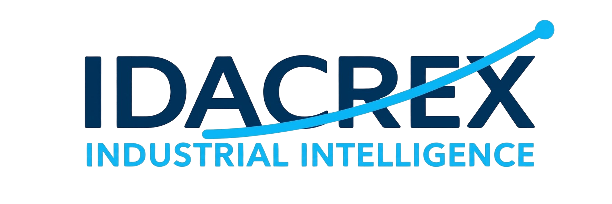

De datos complejos a decisiones inteligentes
IDACREX es una empresa mexicana dedicada al desarrollo de software industrial de inteligencia artificial. Creamos IDACREX Optima, una plataforma que convierte los datos de proceso de la industria en decisiones accionables mediante modelos de predicción, extrapolación y optimización con IA propia.
Nuestro objetivo es brindar soluciones que optimicen procesos, mejoren la calidad del producto y reduzcan costos operativos, siempre alineados a las metas de cada cliente. Trabajamos con datos reales de planta, con transparencia total sobre qué es medido, qué es estimado y qué está fuera de zona.
Nos especializamos en procesos donde no es factible experimentar: operación continua, alta criticidad, variables restringidas por seguridad o regulación. Ahí donde otros métodos requieren mover variables y probar, IDACREX Optima trabaja solo con tu histórico.
Desarrollar soluciones de inteligencia artificial y software industrial que transformen los datos de proceso en información útil para analizar, predecir, extrapolar y optimizar operaciones. Buscamos apoyar decisiones mejor fundamentadas, mejorar el desempeño de los procesos y contribuir a una industria más eficiente, segura y sostenible.
Ser una empresa referente en inteligencia industrial aplicada, reconocida por desarrollar tecnología innovadora y confiable que ayude a las organizaciones a comprender mejor sus procesos, explorar escenarios difíciles de experimentar y avanzar hacia operaciones más eficientes, competitivas y sostenibles.
La mayoría de las técnicas de optimización requieren mover variables y observar resultados. En muchos procesos industriales eso es simplemente imposible.
Trabajamos exclusivamente con datos históricos de tu proceso. Sin mover variables, sin detener la línea, sin riesgo operativo.
Elige el nivel que se adapte a las necesidades de tu planta. Del análisis y predicción avanzada, hasta el control total de lazo cerrado y la integración con tu PLC.
Limpieza, estadística, correlaciones y delimitación de la zona experimental con geometría computacional.
Modelo de IA entrenado con algoritmos propios, validado con métricas de confianza dentro de la zona medida.
Zona extendida estimada (10–25 %), claramente marcada como apoyo, no como garantía.
Búsqueda global de máximos y mínimos, con factibilidad y zona declaradas.
Datos medidos en planta. Uso directo para decisiones.
Valores inferidos por el modelo. Apoyo a la decisión, no garantía.
Ni medido ni inferido con confianza. No se recomienda usar.
Reto: Proceso continuo donde no se puede detener la línea para probar nuevas condiciones.
Solución: Modelo entrenado con datos históricos + extrapolación controlada al 20 % para explorar condiciones no medidas.
Resultado: Reducción de merma y mayor consistencia en el producto final.
Reto: Anticipar el rendimiento de una reacción sin poder experimentar por riesgo de seguridad.
Solución: Modelo con zona extendida del 15 % para estimar rendimiento en condiciones no medidas.
Resultado: Decisiones más informadas sin arriesgar la operación.
Reto: Encontrar el punto óptimo sin detener la línea ni arriesgar la calidad.
Solución: Optimización global con respeto a límites de seguridad y zona declarada.
Resultado: Punto óptimo identificado y validado con el equipo de planta.
Los procesos industriales cambian con el tiempo. Tu modelo debe cambiar con ellos.
Los procesos industriales cambian con el tiempo: suciedad, desgaste, cambios de personal, nuevas condiciones operativas. Por eso, un modelo entrenado con datos de hace un año pierde precisión gradualmente.
En el nivel N2 (Suite Completa) no te dejamos solo con el modelo inicial. Incluimos 1 actualización gratuita del modelo matemático durante el primer año, para que tu software siga siendo preciso conforme tu proceso evoluciona.
Es un software de inteligencia industrial que aprende de tus datos históricos, predice el comportamiento de tus variables críticas, extiende la predicción más allá de la zona conocida y encuentra el punto óptimo de operación.
El diseño de experimentos requiere mover variables y observar resultados. IDACREX Optima funciona solo con tu histórico, sin experimentar en planta. Por eso es ideal para procesos donde no es factible mover variables por seguridad, costo o continuidad operativa.
Que el modelo puede predecir más allá de la zona experimental hasta un porcentaje definido (10–25 %), siempre marcado como estimado. No es una garantía, es apoyo a la decisión. Nunca sustituye la medición física.
El N1 te entrega todo el poder del análisis y la IA para predecir, extrapolar y encontrar óptimos usando solo los datos históricos de tu planta. El N2 incluye todo lo del N1 y además añade la capacidad de conectarse a tu SCADA o PLC (OPC-UA / Modbus), configurar el envío de setpoints, control de lazo cerrado en tiempo real y una actualización gratuita del modelo.
Para el nivel N1 no es obligatorio, ya que funciona de forma aislada con tus datos. Si quieres automatizar el envío de setpoints al proceso y usar el control de lazo cerrado en vivo, necesitas el nivel N2 con integración SCADA/PLC.
Los procesos cambian con el tiempo, por lo que el modelo pierde precisión. El nivel N2 incluye 1 actualización gratuita en el primer año (a los 12 meses). A partir de la segunda, cada actualización cuesta 20–30 % del valor de la licencia. El nivel N1 no incluye actualizaciones.
Firmamos NDA antes de recibir cualquier información. Los datos se cifran en tránsito y en reposo, y solo se usan para el proyecto contratado.
Depende del volumen y calidad de los datos. Para configurar un modelo y dejarlo operativo en el nivel N1 o N2, el tiempo estimado es de 2 a 4 semanas.
Ambas. On-premise para plantas con requisitos de seguridad, y SaaS para empresas sin infraestructura TI. También ofrecemos modalidad híbrida.
[DEFINIR URL oficial]
México
Atendemos a toda Latinoamérica